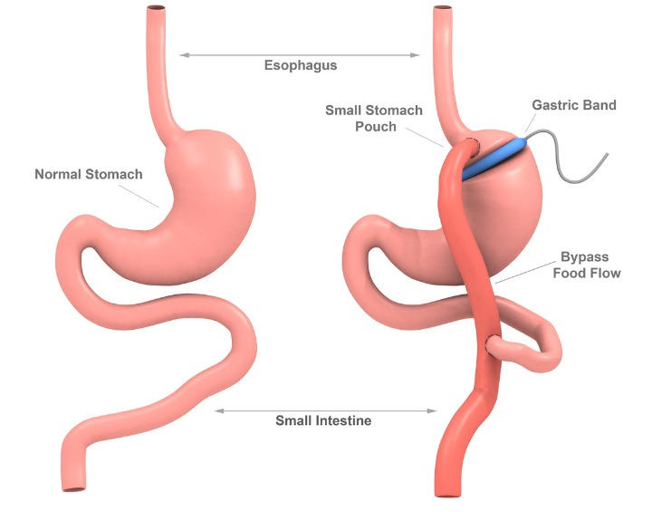

Gastric Bypass Surgery
Gastric bypass is one of weight loss surgical procedures that helps you lose weight surgically by changing the anatomy of your stomach and intestine
Let Us Call You

Orthodontic Treatment in Turkey
Orthodontic treatment is based on the principle of applying pressure on the teeth for a long period ...
Radiation therapy for cancer
The Radiotherapy team works with an integrated multi-specialty team of doctors, surgeons, nursing st...
Thoracic Surgery
Thoracic surgery involves treating diseases that affect the organs inside the chest, including the e...
Chemotherapy and immunotherapy
Ilajak Medical Provides care services for tumor patients in its specialized medical centers in Istan...
Table of Content
Gastric bypass surgery information
The first gastric bypass procedure was performed in 1994, and the method of performing this type of operation has developed over time with the emergence of new surgical technologies, to become safer and more effective compared to the older techniques used in the past. Gastric bypass is a great option when compared to the rest of weight loss procedures, as it results in more weight loss than adjustable gastric banding or gastric sleeve procedures do.
The advantage of this operation is that the weight loss it induces remains constant over time and the patient is less likely to regain weight after they have lost it.
Gastric bypass surgery definition
Gastric bypass surgery helps obesity patients lose weight by both restricting the amount of food a person consumes and reducing the total amount of calories absorbed by the gastrointestinal tract. Gastric bypass procedure also induces some hormonal and physiological changes when food doesn’t pass through the duodenum –first part of small bowel- , as it decreases ghrelin levels, which are the hunger hormone, and increases the levels of leptin hormone, which is the satiety hormone, thereby decreasing the feeling of hunger and suppressing appetite, restricting the amount of food the patient consumes
Types of Gastric bypass surgery
SASI is one of the most recent types of gastric bypass operations, and it has been called by this name because it is through which the path of food entering the stomach is divided into two tracks:
- The first track is the usual food route.
- The second food pathway is from the stomach to the end of the small intestine directly, bypassing a large portion of the bowel space.
Laparoscopic SASI bypass involves performing two simultaneous procedures, namely gastric sleeve, and gastric bypass, where the process is divided into two stages:
- The first stage: It is called (gastrectomy), in which approximately 80% of the stomach volume is cut, including the interior of the stomach.
- The second stage: It is called (gastric bypass) that takes place in conjunction with the first stage, in which a link or path is made between the stomach and the small intestine, resulting in determined and reduced food amount, which leads to a reduced amount of food absorbed from the body.
Gastric bypass surgery benefits
Gastric bypass surgery helps severe obesity patients to lose significant weight permanently, as the percentage of lost weight can reach about 60% of extra body weight within two years, in addition to this it helps patients improve the quality of their lives and their ability to do many activities.
Moreover, gastric bypass may treat or prevent several diseases, such as:
- Gastroesophageal reflux disease
- Heart disease
- Hypertension
- High cholesterol
- Sleep and snoring disorders
- Type II diabetes mellitus
- Cerebrovascular accidents
- Infertility


Gastric bypass surgery side effects
Gastric bypass operations can be very successful in helping obese patients lose weight.
But every surgery has some side effects, below are the most common ones:
- Dumping syndrome
- Hernia
- Internal bleeding or bleeding from the incision
- Leakage
- Perforation of the stomach or intestine
- Intestinal obstruction
- General and/or protein malnutrition.
- Lung and/or heart problems
- Injury to the spleen or any other organ
- Ulceration of the stomach or intestine.
- Vitamin or iron deficiency.
Gastric bypass surgery effect on digestion
This surgery makes the stomach smaller and causes food to bypass part of the small intestine, reduced surface area affects the digestion and absorption of the foods and nutrients.
Risks of Gastric bypass surgery
- Isolating the stomach, and redirecting the intestine. Part of the digestive system is bypassed, leading to nutritional deficiency.
- A complete lifestyle change.
- Selected foods are allowed and others should be avoided.
- The procedure is irreversible, meaning it is difficult to return to how you were before the operation.
Gastric bypass surgery cures diabetes
Doctors aim at this process to help the small intestine get rid of excess glucose for diabetics.
Gastric bypass surgery often improves symptoms of type 2 diabetes, even before weight loss begins.
"The main principle is that after a stomach bypass, the intestine becomes the most important tissue to use glucose and this reduces blood sugar levels," said Dr. Nicholas Sotiropoulos, a researcher at the Endocrinology Department at Children's Hospital in Boston and the Boston College of Medicine.
- Gastric bypass results in a better tissue response to insulin in a greater degree than other bariatric procedures, and this may be considered a reason to choose it over other procedures, especially for type 2 diabetes patients, fatty liver patients, people with metabolic syndrome, or polycystic ovary, as the common factor between these diseases is the presence of insulin resistance.
- It is worth mentioning here that gastric sleeve and gastric bypass procedures improve symptoms of type 2 diabetes equally in the near term, but gastric bypass is more effective in the long run.
- In patients with chronic esophageal reflux disease “GERD”, especially in the presence of complications, gastric bypass is the procedure of choice, and gastric sleeve is not preferable in this case.
- Conversely, in patients who use nonsteroidal anti-inflammatory drugs NSAIDs or steroids on a regular basis, because of certain diseases, or chronic pain, as well as patients with inflammatory bowel disease, gastric bypass is not a good option to manage obesity, and gastric sleeve is the procedure to go for in those cases.
Complications of gastric bypass surgery
- The patient's condition is closely followed, and any pain or nausea is treated.
- The patient is prescribed vitamins, minerals and nutritional supplements after the operation.
- In the first period after the operation, the patient may experience some side effects as a result of rapid weight loss, such as: body aches, fatigue, dry skin, and other symptoms.
Gastric bypass surgery before care
At Ilajak Medical we examine each patient very carefully, after proper examination and eligibility tests, if the patient is eligible for Gastric bypass, we start with a detailed medical history including medications, allergies, and blood tests.
- Patients are requested to fast for 8 hours before the procedure.
- Avoid consuming caffeinated beverages approximately one month before surgery.
- We make sure that you are at your pre-surgery weight lossgoal, give you pre-surgery instructions, including a workout routine and daily calorie range, and help you complete important forms.
Requirements for gastric bypass
The gastric bypass procedure is used in cases of severe obesity, but because this surgical procedure is a major surgery that can pose some risks and side effects, the decision to perform this procedure is done after weighing possible benefits and risks. The obesity patient needs to meet some criteria to qualify for gastric bypass, and these criteria depends upon body mass index, and the clinical assessment of the patient health condition, according to the following:
- A body mass index of more than 40 kg/m2, whether there are complications of obesity or not.
- A body mass index of 35-40 kg/m2, with the presence of serious complications of obesity, such as diabetes, sleep disorders, snoring, high blood pressure, and coronary artery diseases, among others.
- A body mass index of 30-35 kg/m2, with difficulty controlling blood glucose levels or the presence of metabolic syndrome.
Patients qualify for gastric bypass based on the above criteria are evaluated using a comprehensive, multidisciplinary system, usually performed by a bariatric surgeon, a dietitian, and a psychologist.
Gastric bypass surgery how much do you have to weigh?
Eligibility criteria for Gastric bypass include body mass index should be 40 or greater.

Gastric bypass procedure step by step
- Gastric bypass operation is performed under general anesthesia. The surgeon opens a few tiny openings, 3 cm long each, surgical instruments are inserted through these opening along with a camera that has a strong illumination device to enhance vision, the surgeon sees what the camera feeds through an electronic screen, Abdominal cavity is insufflated with inert carbon dioxide to facilitate the surgical tools motion inside the abdomen.
- The surgeon first divides the top of the stomach and isolate it from the rest of stomach, leaving a small pouch of about 30 ml in volume, dramatically decreasing the amount of food the stomach can accommodate.
- The surgeon cuts into the middle of small intestine, and connect the free bottom end of the cut bowel directly to the small pouch of the stomach, so that the food passes through the stomach, directly to the middle of the small intestine, bypassing the first part of the intestine.
Gastric bypass surgery how long does it take
The gastric bypass operation usually takes between two and three hours.
Gastric bypass surgery aftercare
Most gastric bypass operations are laparoscopic, which means that the surgeon makes small incisions.
This makes recovery time shorter. Most people stay in the hospital for two or three days and return to their usual activities within 3 to 5 weeks.
- In general, you will not be allowed to eat for a day or two until the stomach and digestive system recover and then you will follow a specific diet for a few weeks, we talk about it later in this article.
- After gastric bypass surgery, you will be closely followed up by doctors in Ilajak Medical clinics, where:
- The patient's condition is closely monitored, and any pain or nausea, if any, is treated.
- After the operation, the patient has prescribed a set of vitamins, minerals, and nutritional supplements.
Why take vitamins after bariatric surgery?
Bariatric surgeries treatments make slight changes in the way your body absorbs some nutrients, also the amount of food you eat has been greatly reduced, so taking vitamins and nutritional supplements is a necessity, at Ilajak Medical we advise and perform some medical tests for vitamins, supplements, and minerals; To determine the appropriate dosages.
Vitamins and nutritional supplements must be taken daily to prevent malnutrition.
Doctors recommend that gastric bypass patients take vitamins and calcium along with vitamin D, iron, vitamin C, vitamin D, and vitamin B12.
how much vitamin d should i take after gastric bypass?
Vitamins and nutritional supplements should be taken daily to prevent malnutrition.
Doctors recommend that gastric bypass patients take vitamins and calcium with vitamin D, iron, vitamin C, and vitamin B12.
Gastric bypass surgery eating after
- Drinking fluids between meals: To avoid dehydration, you will need to drink at least 8 cups (1.9 liters) of fluids per day, but drinking plenty of fluids at mealtime can make you feel extremely full and prevent you from eating enough nutrient-rich food.
- Chew the food well: the new opening that leads from your stomach to the small intestine is very narrow and can be blocked by larger pieces of food. Blockages prevent food from leaving your stomach and can cause vomiting, nausea, and abdominal pain.
- Take small bites of food and chew them to pureed strength before swallowing.
- Focus on protein-rich foods: Eat these foods before eating other foods.
- Avoid foods high in fat and sugar: These foods travel quickly through your digestive system and cause dumping syndrome.
- Take recommended vitamin and mineral supplements: After surgery, your body will not be able to absorb enough nutrients from your food, you will likely need to take a multivitamin supplement every day.
Gastric bypass surgery recovery
Most gastric bypass operations are laparoscopic, which means the surgeon makes small incisions.
This leads to shorter recovery times.
Most people stay in the hospital for two or three days, and they return to the activities they are used to within 3 to 5 weeks.
It will not be allowed generally to eat for a day or two until the stomach and digestive system heal and then you will follow a specific diet for a few weeks, we will talk about it later in this article.
Gastric bypass surgery diet
Gastric bypass reduces stomach size and changes the way food enters the intestine.
After surgery, it is important to have adequate nutrition while maintaining weight loss.
Your doctor will likely recommend:
- Eating and drinking slowly, take at least 30 minutes to eat your meals and a gap of 30 minutes before or after each meal to drink fluids.
- Maintain small meals: eat several small meals a day, you can start with six small meals a day, then move to four meals, and finally, following a regular diet, three meals a day.
Gastric bypass surgery success rate in turkey
Patients may lose 30% to 50% of their excess weight in the first six months, and 77% of their excess weight 12 months after surgery.
Other studies have also shown that patients do not gain the weight they lost by 50% to 60% of the excess weight 10 to 14 years after surgery. Stomach surgery before and after results
 before
before
 after
after
 before
before
 after
after
 before
before
 after
after
 before
before
 after
after
What weight loss surgery can you have after gastric bypass?
A second surgery to repair — or redo — a gastric bypass may be appropriate.
This is especially true if the result below expectation or you can further decrease the surface area.
Gastric bypass surgery cost in turkey
Turkey has become famous in medical tourism in general, and bariatric surgeries in particular in terms of reasonable price and satisfactory results.
You may contact us to obtain an assessment of your condition and accurate medical advice.
Is gastric bypass better than gastric sleeve?
It is true that all weight loss processes lead to weight loss to one degree or another, but there are some anatomical or physiological factors that can encourage gastric bypass as an option to manage obesity, and there are some other factors that experts consider an absolute contraindication to perform gastric bypass
Gastric bypass surgery life expectancy
Gastric bypass surgery is a permanent and irreversible surgery.
Gastric bypass surgery and pregnancy
It is advised to wait at least 18 months after the gastric bypass surgery to get pregnant, it worth mentioning that Surgery pre-pregnancy helps cope with high blood pressure and gestational diabetes.
While if you are pregnant you should postpone any surgical intervention.
Gastric bypass surgery and alcohol
We advise our patients to avoid alcohol before and after bariatric surgeries, it has an unwanted impact on the surgery and the health, remember that after surgery, even small amounts of alcohol can cause intoxication and low blood sugar.
Gastric bypass surgery dumping syndrome
Dumping syndrome after gastric bypass surgery is when food goes directly from your stomach pouch into your small intestine without being digested.
There are 2 types of dumping syndrome: early and late.
Early dumping happens 10 to 30 minutes after a meal.
Can you have babies after Gastric bypass surgery?
We advise postponing pregnancy until the weight stabilizes — typically at least 12 to 18 months after surgery.
Does Gastric bypass surgery change your personality?
Bariatric surgery is generally associated with improved mental health and quality of life, postsurgical psychological and behavioral changes are less predictable than physical changes. Depression and mood disorders may occur due to the change in lifestyle and calorie intake, it worth mentioning that good mood due to achieved goals my overcome these issues.
Common questions of gastric bypass
Yes, but Gastric bypass surgery has some risks like any other surgical procedure.
No, Gastric bypass surgery is not reversible.
No, Gastric bypass surgery carries some risks like any other surgical procedure, like infection blood clots, and internal bleeding.
Due to the extreme decrease in food consumption, some patients may face malnutrition, poor wound healing, and infection.
Yes, It is one of the most effective ways to lose weight.
Yes, Gastric bypass surgery is permanent and irreversible.
Glycemic control and even diabetes type 2 cure have been frequently reported with Gastric bypass.
One of the main complications of gastric bypass is the increased risk of colorectal cancer.
Doctors recommend patients not take aspirin or aspirin-containing products for atleast one week after surgery.
A rise in liver function tests (LFTs) had been noted in a patient following gastric bypass
A rise in liver function tests (LFTs) had been noted in a patient following gastric bypass
Higher recurrence rates are reported after standard surgical treatment of hiatal hernia in morbidly obese patients,
It is a rare complication in 10% of cases.
Fortunately, gastritis is not a common complication after gastric bypass.
Limited studies exist on gastric bypass effect on PCOS.
"Failure occurs either when: 1- Patients experience severe side effects. 2- When they are unable to lose weight."
"It is bad if: 1- Your body mass index is below 35. 2- You don’t have obesity-related health problems. 3- Can lose weight via diet and exercise."
Cause they are among the top bariatric surgeries, where it is faster to lose weight in Gastric bypass.
To reduce the danger of life-threatening obesity-related health issues, besides reducing excess weight.
To reduce the danger of life-threatening obesity-related health issues, besides reducing excess weight.
Gastric bypass surgery is suitable for obese people with a BMI of more than 35, especially those having obesity-related health problems of all ages up to 60 years old.
Dumping syndrome is when food is dumped directly from the stomach pouch to the small intestine without being digested.
This refers to when food gets dumped directly from your stomach pouch to your small intestine without being digested.
Today over 90% of gastric bypasses performed for weight loss are done laparoscopically.
The cost of gastric bypass surgery ranges from 3,100 to 3,500 USD.
Due to higher risks and complications, gastric bypass is not usually redone.
Yes, hair loss after bariatric surgery is very common.
This is an indirect outcome due to the hormonal imbalance.
Due to malnutrition caused by some weightloss surgeries fatal development could be affected, while the surgery before pregnancy may help in overcoming hypertension and gestational diabetes.
"Yes if, 1- Your efforts to lose weight with diet and exercise have been unsuccessful. 2- Your body mass index (BMI) is 40 or higher."
Yes, it helps you to lose weight.
Yes, because of poor exercise or diet habits.
Ilajak Medical© | A passion for care